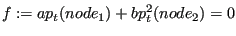

Next: *NO ANALYSIS Up: Input deck format Previous: *MPC Contents
Keyword type: model definition
With this option, an equation between variables in a network (total temperature and total pressure at the end nodes of a network element, mass flow in the middle node) can be created. The corresponding degrees of freedom are:
The use of *NETWORK MPC requires the coding of subroutines networkmpc_lhs.f and networkmpc_rhs.f by the user. In these routines the user defines the MPC (linear or nonlinear) using the information entered underneath *NETWORK MPC. The syntax is identical to *EQUATION except for an additional parameter TYPE specifying the type of MPC. Using this type the user can distinguish between different kinds of MPC in the networkmpc_lhs.f and networkmpc_rhs.f subroutines.
For instance, suppose the user wants to define a network MPC of the form:
|  | (646) |
specifying that the total pressure in node 1 should be (-b/a) times the square of the total pressure in node 2. There are 2 degrees of freedom involved: dof 2 in node 1 and dof 2 in node 2. Underneath *NETWORK MPC the user defines the coefficients and degrees of freedom of the terms involved:
*NETWORK MPC,TYPE=QUADRATIC 2 node1,2,a,node2,2,b
All this information including the type of the MPC is transferred to the networkmpc_lhs.f and networkmpc_rhs.f subroutines. In networkmpc_rhs.f the user has to code the calculation of -f, in networkmpc_lhs.f the calculation of the derivative of f w.r.t. each degree of freedom occurring in the MPC. This has been done for TYPE=QUADRATIC and the reader is referred to the source code and example networkmpc.inp for further details.